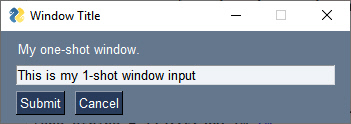
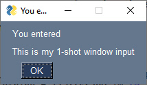
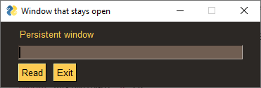
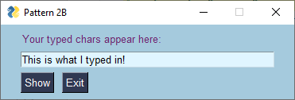
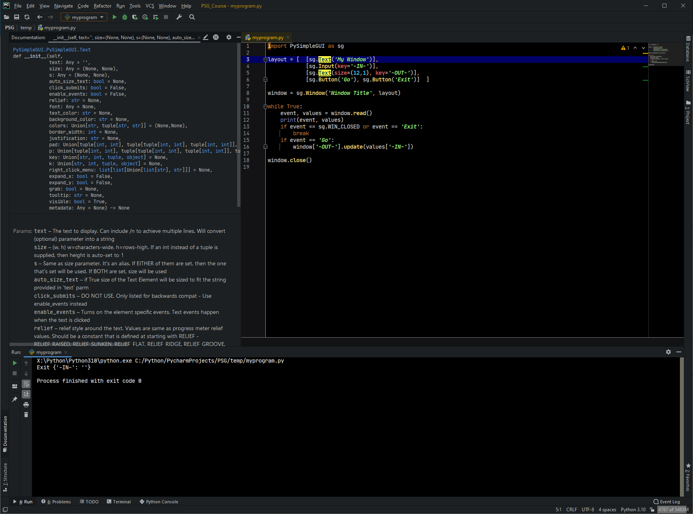
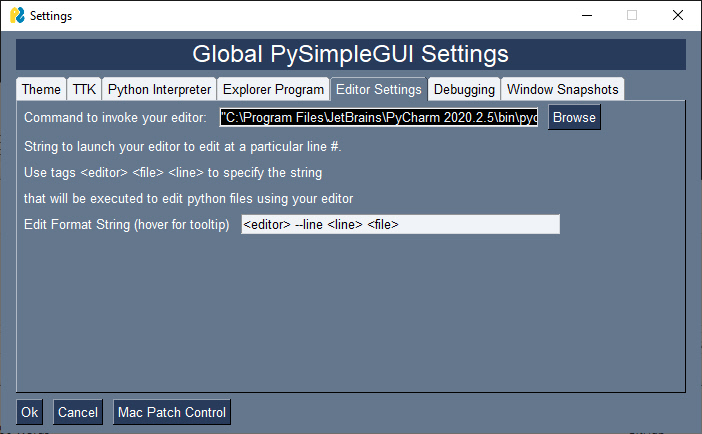
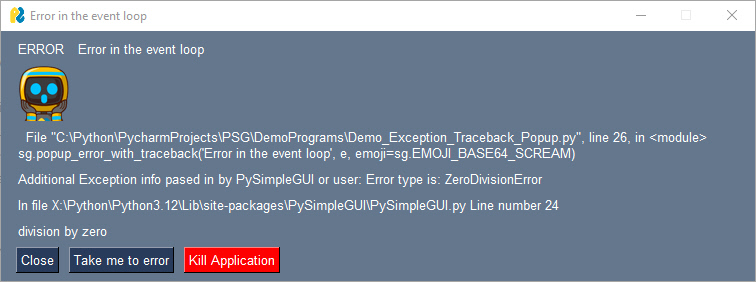
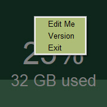

Getting Started
All of your PySimpleGUI programs will utilize one of these 2 design patterns depending on the type of window you're implementing. The two types of windows are:
- One-shot
- Persistent
The One-shot window is one that pops up, collects some data, and then disappears. It is more or less a 'form' meant to quickly grab some information and then be closed.
The Persistent window is one that sticks around. With these programs, you loop, reading and processing "events" such as button clicks. It's more like a typical Windows/Mac/Linux program.
If you are writing a "typical Windows program" where the window stays open while you collect multiple button clicks and input values, then you'll want Recipe Pattern 2B.
Pattern 1A - "One-shot Window" - (The Simplest Pattern)


This will be the most common pattern you'll follow if you are not using an "event loop" (not reading the window multiple times). The window is read and then closed.
When you "read" a window, you are returned a tuple consisting of an event and a dictionary of values.
The event is what caused the read to return. It could be a button press, some text clicked, a list item chosen, etc, or WIN_CLOSED if the user closes the window using the X.
The values is a dictionary of values of all the input-style elements. Dictionaries use keys to define entries. If your elements do not specificy a key, one is provided for you. These auto-numbered keys are ints starting at zero.
This design pattern does not specify a key for the InputText element, so its key will be auto-numbered and is zero in this case. Thus the design pattern can get the value of whatever was input by referencing values[0]
import PySimpleGUI as sg
layout = [[sg.Text('My one-shot window.')],
[sg.InputText()],
[sg.Submit(), sg.Cancel()]]
window = sg.Window('Window Title', layout)
event, values = window.read()
window.close()
text_input = values[0]
sg.popup('You entered', text_input)
If you want to use a key instead of an auto-generated key:
import PySimpleGUI as sg
layout = [[sg.Text('My one-shot window.')],
[sg.InputText(key='-IN-')],
[sg.Submit(), sg.Cancel()]]
window = sg.Window('Window Title', layout)
event, values = window.read()
window.close()
text_input = values['-IN-']
sg.popup('You entered', text_input)
Pattern 1B - "One-shot Window" - (Self-closing, single line)
For a much more compact window, it's possible to create, display, read, and close a window in a single line of code.
import PySimpleGUI as sg
event, values = sg.Window('Login Window',
[[sg.T('Enter your Login ID'), sg.In(key='-ID-')],
[sg.B('OK'), sg.B('Cancel') ]]).read(close=True)
login_id = values['-ID-']
The important part of this bit of code is close=True. This is the parameter that instructs PySimpleGUI to close the window just before the read returns.
This is a single line of code, broken up to make reading the window layout easier. It will display a window, let the user enter a value, click a button and then the window will close and execution will be returned to you with the variables event and values being returned.
Notice use of Element name "Shortcuts" (uses B rather than Button, T instead of Text, In rather than InputText, etc.). These shortcuts are fantastic to use when you have complex layouts. Being able to "see" your entire window's definition on a single screen of code has huge benefits. It's another tool to help you achieve simple code.
Pattern 2A - Persistent window (multiple reads using an event loop)

The more advanced/typical GUI programs operate with the window remaining visible on the screen. Input values are collected, but rather than closing the window, it is kept visible acting as a way to both input and output information. In other words, a typical Window, Mac or Linux window.
Let this sink in for a moment.... in 10 lines of Python code, you can display and interact with your own custom GUI window. You are writing "real GUI code" (as one user put it) that will look and act like other windows you're used to using daily.
This code will present a window and will print values until the user clicks the exit button or closes window using an X.
import PySimpleGUI as sg
sg.theme('DarkAmber') # Keep things interesting for your users
layout = [[sg.Text('Persistent window')],
[sg.Input(key='-IN-')],
[sg.Button('Read'), sg.Exit()]]
window = sg.Window('Window that stays open', layout)
while True: # The Event Loop
event, values = window.read()
print(event, values)
if event == sg.WIN_CLOSED or event == 'Exit':
break
window.close()
Here is some sample output from this code:
Read {'-IN-': 'typed into input field'}
Read {'-IN-': 'More typing'}
Exit {'-IN-': 'clicking the exit button this time'}
The first thing printed is the "event" which in this program is the buttons. The next thing printed is the values variable that holds the dictionary of return values from the read. This dictionary has only 1 entry. The "key" for the entry is '-IN-' and matches the key passed into the Input element creation on this line of code:
If the window was close using the X, then the output of the code will be:
The event returned from the read is set to None (the variable WIN_CLOSED) and so are the input fields in the window. This None event is super-important to check for. It must be detected in your windows or else you'll be trying to work with a window that's been destroyed and your code will crash. This is why you will find this check after every window.read() call you'll find in sample PySimpleGUI code.
In some cirsumstances when a window is closed with an X, both of the return values from window.read() will be None. This is why it's important to check for event is None before attempting to access anything in the values variable.
Pattern 2B - Persistent window (multiple reads using an event loop + updates data in window)

This is a slightly more complex, but more realistic version that reads input from the user and displays that input as text in the window. Your program is likely to be doing both of those activities so this pattern will likely be your starting point.
Do not worry yet what all of these statements mean. Just copy the template so you can start to experiment and discover how PySimpleGUI programs work.
import PySimpleGUI as sg
sg.theme('BluePurple')
layout = [[sg.Text('Your typed chars appear here:'), sg.Text(size=(15,1), key='-OUTPUT-')],
[sg.Input(key='-IN-')],
[sg.Button('Show'), sg.Button('Exit')]]
window = sg.Window('Pattern 2B', layout)
while True: # Event Loop
event, values = window.read()
print(event, values)
if event == sg.WIN_CLOSED or event == 'Exit':
break
if event == 'Show':
# Update the "output" text element to be the value of "input" element
window['-OUTPUT-'].update(values['-IN-'])
window.close()
To modify an Element in a window, you call its update method. This is done in 2 steps. First you lookup the element, then you call that element's update method.
The way we're achieving output here is by changing a Text Element with this statement:
window['-OUTPUT-'] returns the element that has the key '-OUTPUT-'. Then the update method for that element is called so that the value of the Text Element is modified. Be sure you have supplied a size that is large enough to display your output. If the size is too small, the output will be truncated.
There are two important concepts when updating elements!
- If you need to interact with elements prior to calling
window.read()you will need to "finalize" your window first using thefinalizeparameter when you create yourWindow. "Interacting" means calling that element's methods such asupdate,expand,draw_line, etc. - Your change will not be visible in the window until you either:
A. Callwindow.read()again
B. Callwindow.refresh()
Inside your event loop
For persistent windows, after creating the window, you have an event loop that runs until you exit the window. Inside this loop you will read values that are returned from reading the window and you'll operate on elements in your window. To operate on elements, you look them up and call their method functions such as update.
Old Style Element Lookups - FindElement
The original / old-style way of looking up elements using their key was to call window.FindElement or the shortened window.Element, passing in the element's key.
These 3 lines of code do the same thing. The first line is the currently accepted way of performing this lookup operation and what you'll find in all of the current demos.
window['-OUTPUT-']
window.FindElement('-OUTPUT-')
window.find_element('-OUTPUT-')
window.Element('-OUTPUT-')
Element Operations
Once you lookup an element, the most often performed operation is update. There are other element methods you can call such as set_tooltip(). You'll find the list of operations available for each element in the call summary at the end of the main documentation.
To call any of these other methods, you do the element lookup, then add on the call such as this call to set_tooltip.
NOTE!
Operations on elements will not appear in your window immediately. If you wish for them to appear immediately, prior to your next window.read() call, you must call window.refresh(). A call to read or refresh causes your changes to be displayed.
Exiting a Window
For persistent windows, you will find this if statement immediately following every window.read call you'll find in this document and likely all of the demo programs:
or this version which is easier for beginners to understand. They perfect exactly the same check.
This is your user's "way out". Always give a way out to your user or else they will be using task manager or something else, all the while cursing you.
Beginners to Python may not understand this statement and it's important to understand it so that you don't simply ignore it because you don't understand the syntax.
The if statement is identical to this if statement:
The event in (sg.WIN_CLOSED, 'Quit') simply means is the value of the event variable in the list of choices shown, in this case WIN_CLOSED or Quit. If so, then break out of the Event Loop and likely exit the program when that happens for simple programs.
You may find 'Exit' instead of 'Quit' in some programs. Or may find only WIN_CLOSED is checked. Exit & Quit in this case refer to a Quit/Exit button being clicked. If your program doesn't have one, then you don't need to include it.
Close Your Windows
When you're done with your window, close it.
The reason is that for some ports, like PySimpleGUIWeb, you cannot exit the program unless the window is closed. It's nice to clean up after yourself too.
Coding Conventions
By following some simple coding conventions you'll be able to copy / paste demo program code into your code with minimal or no modifications. Your code will be understandable by other PySimpleGUI programmers as well.
The primary suggested conventions are:
import PySimpleGUI as sg- Name your Window
window - Name the return values from reading your window
eventandvalues - Name your layout
layout - Use
window[key]to lookup elements - For keys that are strings, follow this pattern
'-KEY-'
Of course you don't have to follow any of these. They're suggestions, but if you do follow them, your code is a lot easier to understand by someone else.
Coding Tips
A few tips that have worked well for others. In the same spirit as the coding conventions, these a few observations that may speed up your development or make it easier for others to understand your code. They're guidelines / tips / suggestions / ideas... meant to help you.
- Stay simple at every opportunity
- Read or search the documentation (http://www.PySimpleGUI.org)
- Use the coding conventions outlined above
- Write compact layouts
- Use "user defined elements" when you find yourself repeating parameters many times (functions that return elements)
- Use PySimpleGUI constructs rather than other GUI frameworks' constructs
- Use reasonable timeout values (as large of non-zero values as possible... be a good CPU citizen)
- Do not try to make any PySimpleGUI call from a thread
- Close your windows before exiting
- Make linear event loops
- Use the
valuesdictionary rather thanElement.getmethods - Look through Demo Programs for more tips / techniques (http://Demos.PySimpleGUI.org)
Most of these are self-explanatory or will be understood as you learn more about PySimpleGUI. You won't now what a timeout value is at this point, but if/when you do use reads with timeouts, then you'll understand the tip.
A little more detail on a few of them that aren't obvious.
Write compact layouts
Try to keep your layout definitions to a single screen of code. Don't put every parameter on a new line. Don't add tons of whitespace.
If you've got a lot of elements, use the shortcut names (e.g. using sg.B rather than sg.Button saves 5 characters per button in your layout).
The idea here to be able to see your entire window in your code without having to scroll.
Use PySimpleGUI constructs
PySimpleGUI programs were not designed using the same OOP design as the other Python GUI frameworks. Trying to force fit them into an OOP design doesn't buy anything other then lots of self. scattered in your code, more complexity, and possibly more confusion
Of course your overall design can be OOP.
The point is that there is no concept of an "App" or a never-ending event loop or callback functions. PySimpleGUI is different than tkinter and Qt. Trying to code in that style is likely to not result in success. If you're writing a subclass for Window as a starting point, it's highly likely you're doing something wrong.
Environment Setup & Best Practices
If you're going to be doing a moderate to high amount of PySimpleGUI programming or simply want to get the most out of your PySimpleGUI experience, there are a few steps you can take that will make a big difference.
Using an IDE(Integrated Development Environment) to edit and run your PySimpleGUI programs is highly recommended. PySimpleGUI was written so that it integrates with PyCharm particularly well. For all classes and functions PyCharm shows you the documentation in the window as you're writing your code. It's the exact same documentation that you'll find in the Call Reference portion of the PySimpleGUI documentation. Each parameter is described in detail and PyCharm does type-checking and highlights errors in your code before you even try to run it.
You can learn the basics of using PyCharm in a couple of hours. The most you'll need to do is:
* Set up the interpreter (you can use the system interpreter or a virtual one)
* Create a project
* Add your Python files to your project
* Learn how to run your program
With an IDE you will save a LOT of time, every time you work on your program. Big time savers include:
* Code completion feature (Control+Space)
* Viewing documentation of a class or function (Control+Q)
* Quickly navigating to a variable, class, function definition (control+click)
* Jump to error when there's a crash (click on the error message)
Here is a sample program shown in PyCharm. The Text element's documentation is shown when the cursor is on a Text element in your program. You're able to write & run your code as well as look at the documentation all within the PyCharm window.

Editor and Explorer
PySimpleGUI tightly integrates with your editor and file explorer programs. You can set these in the PySimpleGUI Global Settings accessible through the Home Window (sg.main(), psgmain, psghome are all ways of getting to the Home Window) or running command line program psgsettings.
The Editor Settings tab is where you set up your editor program. Note that you should use quotes around the invoke command if there are spaces anywhere. The Editor Format String specifies the command line parameters used by your editor program to launch it in a manner that will start editing at a particular line number within a particular file.

The Explorer Program tab is where you specify the name of the program that you use to browse for files on your OS. For Windows, the value is simply explorer.
Error Popups
The editor and explorer are used by the Demo Browser as well as the PySimpleGUI Error with Traceback Popup window. This popup is used internally within PySimpleGUI and you can also use the same popup. To use this popup, call popup_error_with_traceback like in this example:
try:
a = 1/0
except Exception as e:
sg.popup_error_with_traceback('Error in the event loop', e, emoji=sg.EMOJI_BASE64_SCREAM)

If you have your editor set up then clicking "Take Me To Error" will open your editor to the line number in your code with the error.
Application Right Click Menus
If you do a lot of PySimpleGUI programming, then you may find using the pre-defined right-click menus and code that processes them to be a real time-saver.
Try adding to your Window creation the parameter right_click_menu=sg.MENU_RIGHT_CLICK_EDITME_VER_EXIT. Then in your event loop, add this code:
if event == 'Edit Me':
sg.execute_editor(__file__)
elif event == 'Version':
sg.popup_scrolled(__file__, sg.get_versions(), location=window.current_location(), keep_on_top=True, non_blocking=True)
Right clicking your application will show a menu 
This enables you to right click the application when it's running and choosing "Edit Me" or "Version". It can save a lot of time, especially if you're running lots of PySimpleGUI programs located in different folders on your system. Rather than opening your editor, and navigating to your program's location and opening the file to edit it, simply right click on the running application and choose "Edit Me". The sg.execute_editor call will open your editor for you to the correct file and location.
For "Gadgets"/"Desktop Widget" programs that have no titlebar, using a right click menu with an Exit option is really important as there is no taskbar icon nor titlebar that can be used to close the application. Always give a way out for your users!
Working with Images and Icons
Image files can be easily lost when copying projects or converting them into packages. Icons on your windows can be tricky because a PySimpleGUI program can run on multiple operating systems as well as being turned into an executable by tools like PyInstaller.
The easiest solution to these problems is to convert your icons and images from PNG files into Base64 and including them directly in your PySimpleGUI application source file. The psgresizer application makes converting your images very easy.
Once converted to Base64, paste the into your source and then use with both Window creation and popup calls. You can also set the application-wide icon so that all windows created by the application use the same icon. Using files for icons has the downside of each OS having a unique format. Windows uses ICO files, Linux uses PNG files and Mac uses... uhm.... just use Base64 encoded icons and you'll save yourself a lot of headaches.